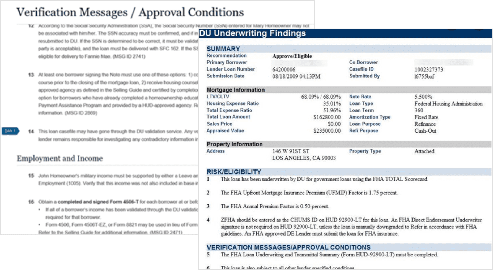
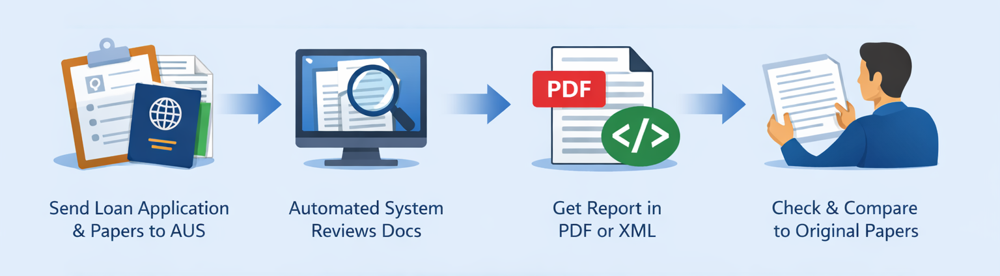
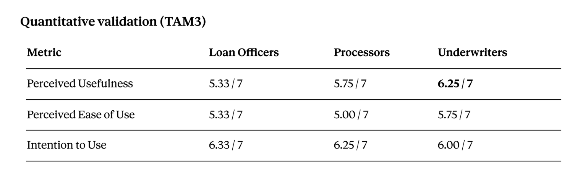
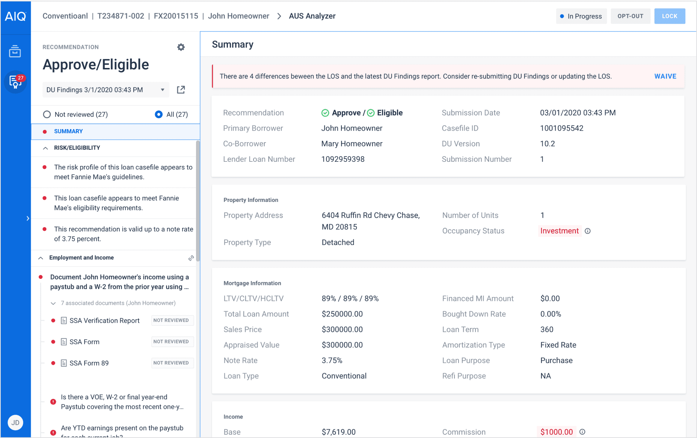
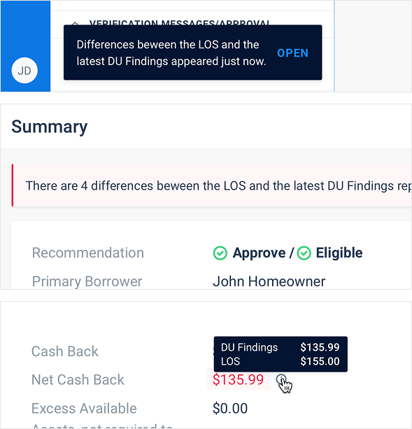
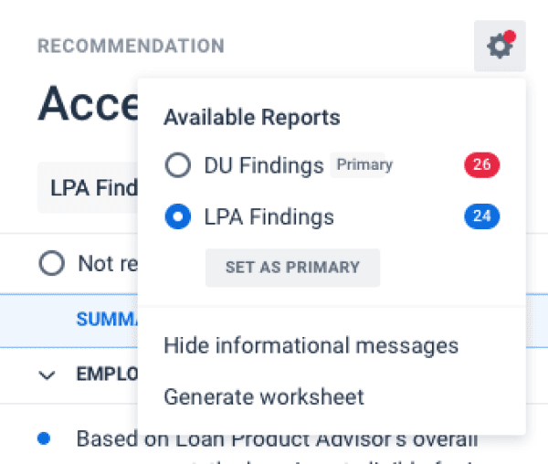
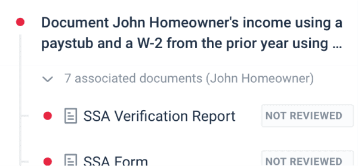
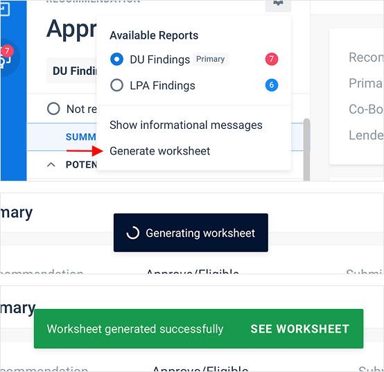
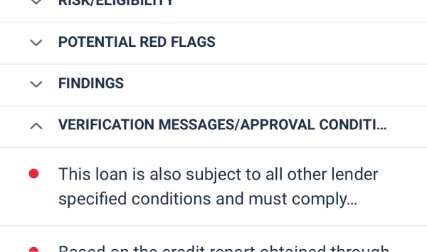

Overview
AUS Analyzer is a tool that automates the review of Automated Underwriting System (AUS) reports for mortgage lenders. It was the first product on the market to do this.
I led design end-to-end: discovery, research collaboration, interaction design, prototyping, usability testing, and post-launch iteration. I also presented the product at EXP22, one of the largest mortgage tech conferences in the US.
Key result: Reduced AUS report review time by over 80%, from ~30 minutes of manual work to under 7 minutes per loan file.
The Problem
When someone applies for a mortgage in the US, the loan goes through an Automated Underwriting System that generates a Findings Report — typically 20–35 messages covering income, credit, property, eligibility, and more.

Classic AUS Process
Underwriters had to manually read each message, find matching loan documents in a separate system, compare data against the Loan Origination System, and track changes between multiple AUS runs. This took 25–40 minutes per loan. With lenders processing up to 3,000 loans/month, it was slow, error-prone, and mentally draining.

Discovery & Research
Early discovery
I worked with our SME and PM to map the underwriting workflow and identify pain points. Direct user access was limited (bank employees), so I relied on SME sessions, stakeholder interviews, and early research.
Key themes emerged fast: speed is everything for underwriters, AUS reports mix critical items with boilerplate noise, constant context switching between systems kills efficiency, and tracking changes between AUS runs is entirely manual.
These insights shaped the MVP design direction.
Pre-launch validation (14 participants)
Before launch, I collaborated with our UX Researcher on a formal study with real mortgage professionals — 3 focus group sessions, 14 participants, 90-minute remote sessions with workflow discussion, demo, TAM3 survey, and structured feedback.
The study confirmed early assumptions and surfaced new insights: users wanted action-oriented messages instead of walls of text, underwriters needed explicit control over review status, and processors were unsure how the tool fit their specific workflow.

Underwriters — our primary persona — rated usefulness highest.
Design Approach
Research insights translated into four principles:
-
Automate the match, not the decision. The system links AUS messages to loan documents automatically — but the underwriter stays in control of the final review.
-
Save time. By streamlining the process, AUS Analyzer reduces the time spent on manual reviews.
-
Improve risk assessment. The tool provides better visibility into potential issues, enabling more informed decision-making.
-
Increase accuracy. Automated matching minimizes human error, leading to more reliable outcomes.

Key Features

LOS comparison with mismatch detection
Summary view compares AUS data against the Loan Origination System and flags discrepancies (e.g., different loan amounts, property addresses). Mismatches can be waived with a documented reason for audit trails.

Dual report support
AUS Analyzer supports both DU Findings and LPA Feedback Certificate. Users can switch between them and set one as primary.

Automatic document association
The system matches loan documents to relevant AUS messages automatically — so the underwriter sees the paystub right next to the income verification message, without searching.

AUS Worksheet generation
Automatically generates a compliance worksheet documenting the review — used for quality control and investor delivery

Smart message categorization
Messages are grouped by domain (Employment/Income, Credit, Eligibility, etc.) with unreviewed items surfaced first.
Impact
Efficiency
-
80%+ reduction in review time — from ~30 min to under 7 min per loan file
-
Average DU Findings report contains 25–35 messages; AUS Analyzer auto-matches documents and filters noise, so underwriters focus on 8–12 actionable items
-
With lenders processing up to 3,000 loans/month per company, even small time savings per loan compound into massive operational gains
-
Mismatch detection between AUS and LOS reduced data discrepancy errors before loans reach investors
User validation
-
Perceived Usefulness scored 6.25/7 among underwriters (primary persona)
-
Behavioral Intention to Use: 6.0–6.33/7 across all roles
-
Research participants described it as making the process "simpler," "incredible" for tracking changes, and valuable for "cleaner file submissions"
Business impact
-
First product on the market to automate AUS report review
-
Presented at ICE Experience 2022 (EXP22) — the largest mortgage tech conference in the US — where we collected direct user feedback that fed into further iterations
Reflection
What worked well
Building a strong relationship with the SME was essential. In a domain this complex, having someone who could translate regulatory nuance into design implications made a huge difference.
What I'd do differently
I'd push harder for more direct user access earlier in the process. While SME validation was valuable, some assumptions only surfaced when real users interacted with the product.
What I learned
In B2B enterprise design, "fewer clicks" isn't always the right goal. This project taught me to frame UX arguments in terms of risk and accuracy, not just speed .
Explore One More Analyzer
Audit Analyzer
Mortgage industry's first autonomous post-closing solution, ensuring loans are closed correctly.